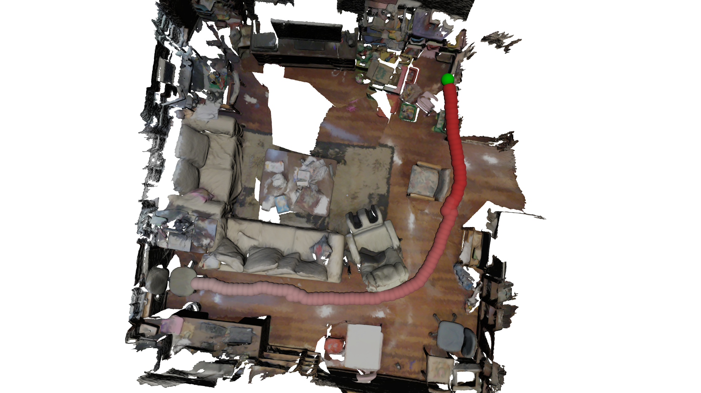
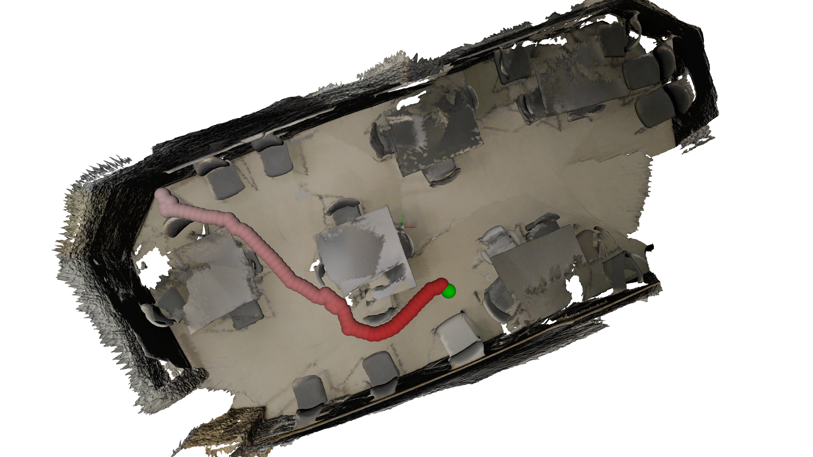
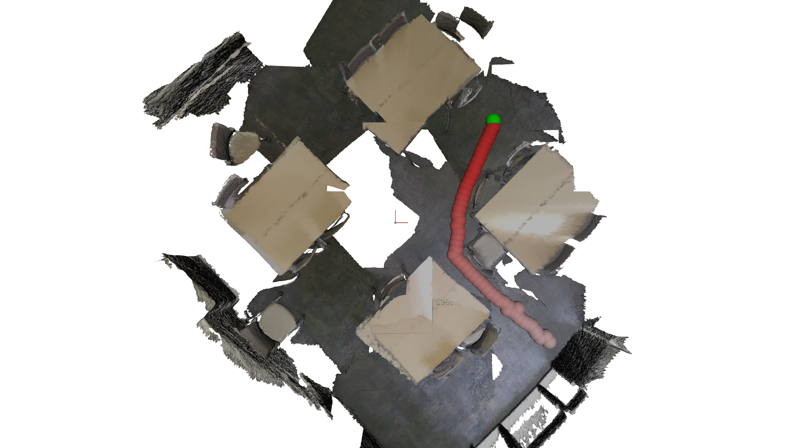
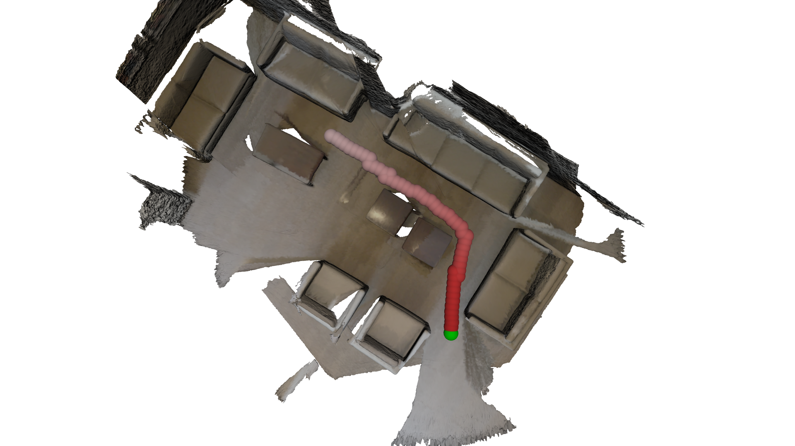
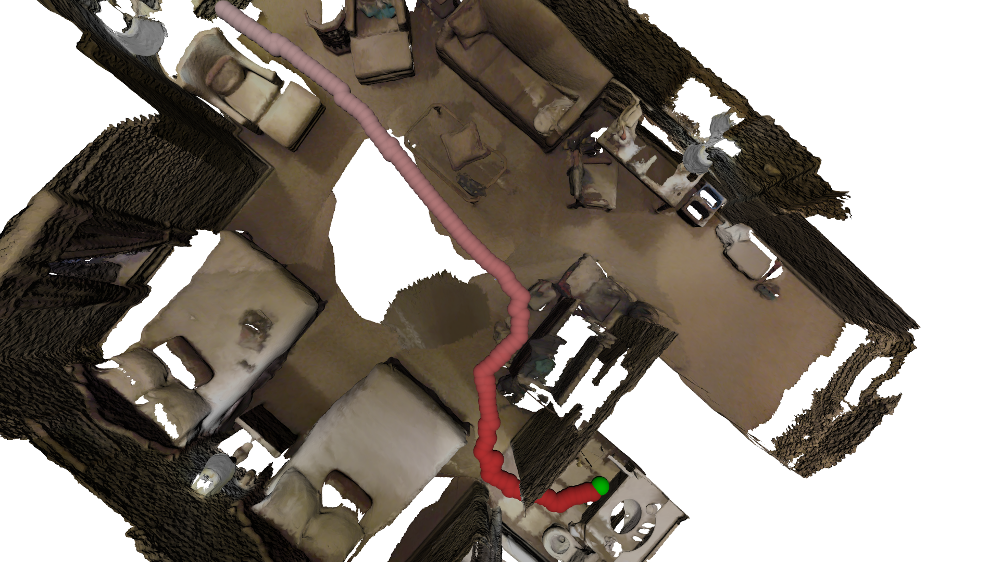
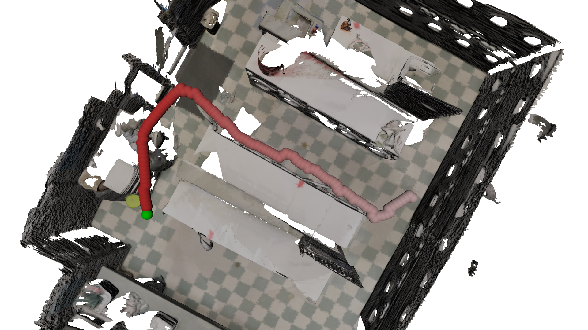
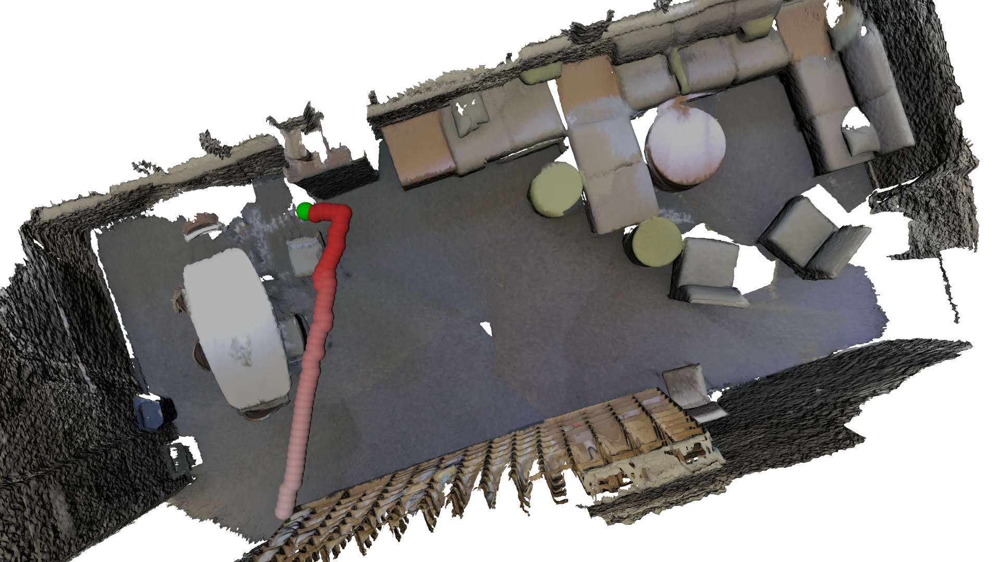
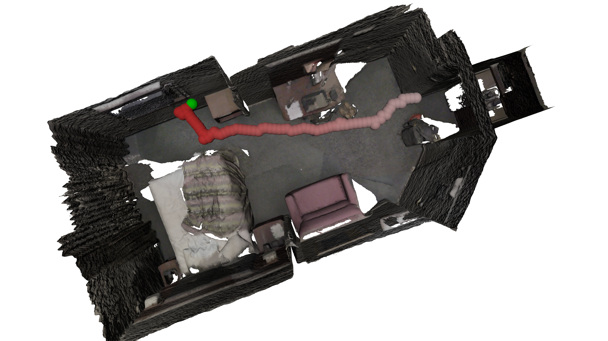

Diffusion-based Generation, Optimization, and Planning in 3D Scenes
✶ indicates equal contribution
1National Key Laboratory of General Artificial Intelligence, BIGAI
2School of Computer Science & Technology, Beijing Institute of Technology
3Dept. of Automation, Tsinghua University 4Institute for AI, Peking University
We introduce SceneDiffuser, a conditional generative model for 3D scene understanding. SceneDiffuser is applicable to various scene-conditioned 3D tasks: (a)human pose generation, (b) human motion generation, (c) dexterous grasp generation, (d) path planning for 3D navigation with goals, and (e) motion planning for robot arms.
Abstract
We introduce SceneDiffuser, a conditional generative model for 3D scene understanding. SceneDiffuser provides a unified model for solving scene-conditioned generation, optimization, and planning. In contrast to prior works, SceneDiffuser is intrinsically scene-aware, physics-based, and goal-oriented. With an iterative sampling strategy, SceneDiffuser jointly formulates the scene-aware generation, physics-based optimization, and goal-oriented planning via a diffusion-based denoising process in a fully differentiable fashion. Such a design alleviates the discrepancies among different modules and the posterior collapse of previous scene-conditioned generative models. We evaluate SceneDiffuser with various 3D scene understanding tasks, including human pose and motion generation, dexterous grasp generation, path planning for 3D navigation, and motion planning for robot arms. The results show significant improvements compared with previous models, demonstrating the tremendous potential of SceneDiffuser for the broad community of 3D scene understanding.
Human Pose Generation in 3D Scenes
Note: Click the radio button to select a scene for result visualization and drag to move your view around.
Dexterous Grasp Generation for 3D Objects
Note: Click the select dropdown to select a object and a pre-sampled grasp for result visualization. Drag to move your view around.
Human Motion Generation in 3D Scenes
| N0SittingBooth | N3OpenArea |
|---|---|
Note: Each column shows sampled human motions from the same start pose.
Path Planning for 3D Scene Navigation
|  |  |
|  |  |
|  |  |
|  |  |
Note: The red balls represent the planning result, starting with the lightest red ball and ending with the darkest red ball. The green ball indicates the target position.
Motion Planning for Robot Arms

|

|

|

|

|

|
Bibtex
If you find our project useful, please consider citing us:
@article{huang2023diffusion,
title={Diffusion-based Generation, Optimization, and Planning in 3D Scenes},
author={Huang, Siyuan and Wang, Zan and Li, Puhao and Jia, Baoxiong and Liu, Tengyu and Zhu, Yixin and Liang, Wei and Zhu, Song-Chun},
journal={arXiv preprint arXiv:2301.06015},
year={2023}
}